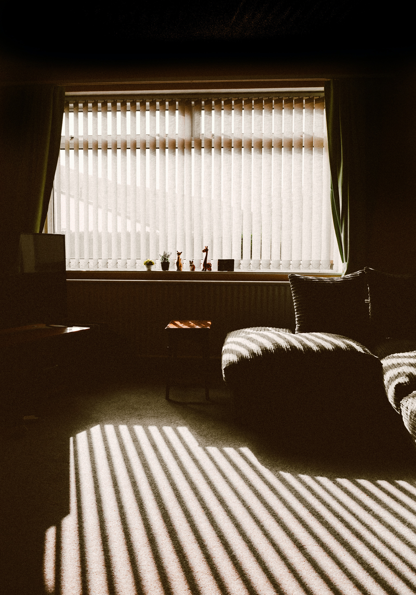

Detta är ett individuellt möte där jag använder mig av min
intuition. Vi sätter oss ner och jag är en kanal mellan
andevärlden och dig. Jag bjuder in andevärlden med dina nära och
kära att delta och de kan sända budskap genom mig. Jag använder
mig av de jag har och kan, ibland lägger jag kort och ibland
använder jag min pendel och kristaller. Ca 60 min.
Pris: 400:-
Medialvägledning
Detta är ett individuellt möte där jag använder mig av min intuition. Vi
sätter oss ner och jag är en kanal mellan andevärlden och dig. Jag
bjuder in andevärlden med dina nära och kära att delta och de kan sända
budskap genom mig. Jag använder mig av de jag har och kan, ibland lägger
jag kort och ibland använder jag min pendel och kristaller. Ca 60 min.
Pris: 400:-
Seans
En seans sker i grupp på mellan 5-10 personer. Jag kommer hem
till er och vi bjuder in nära och kära från andevärlden och jag
förmedlar budskap från dessa. Beroende på vad och vem som kommer
till oss tar en seans mellan 1-3 timmar.
Pris: 125:-/pers.
Seans
En seans sker i grupp på mellan 5-10 personer. Jag kommer hem till er
och vi bjuder in nära och kära från andevärlden och jag förmedlar
budskap från dessa. Beroende på vad och vem som kommer till oss tar en
seans mellan 1-3 timmar.
Pris: 125:-/pers.
Husrensning
Känner du av en närvaro hemma? Känner du dig iakttagen eller
flyttar sig saker utan att du kan förklara varför? Känner du av
ett obehag eller blåser de kallt utan att några fönster står
öppna? Då kan en husrensing vara bra.
Här kommer jag hem till dig och känner av och rensar ut ditt hus
eller lägenhet på energier som du inte vill ha där. Jag kanske
behöver hjälpa vilsna själar över till ljuset. Efter ca 1 månad
hörs vi av igen för att känna hur de känns då. En husrensning är
svårt att sätta en tid på då de helt beror på vad och vem som
finns där. Ca 2-5 timmar.
Pris: 700:-

Husrensning
Känner du av en närvaro hemma? Känner du dig iakttagen eller flyttar sig
saker utan att du kan förklara varför? Känner du av ett obehag eller
blåser de kallt utan att några fönster står öppna? Då kan en husrensing
vara bra.
Här kommer jag hem till dig och känner av och rensar ut ditt hus eller
lägenhet på energier som du inte vill ha där. Jag kanske behöver hjälpa
vilsna själar över till ljuset. Efter ca 1 månad hörs vi av igen för att
känna hur de känns då. En husrensning är svårt att sätta en tid på då de
helt beror på vad och vem som finns där. Ca 2-5 timmar.